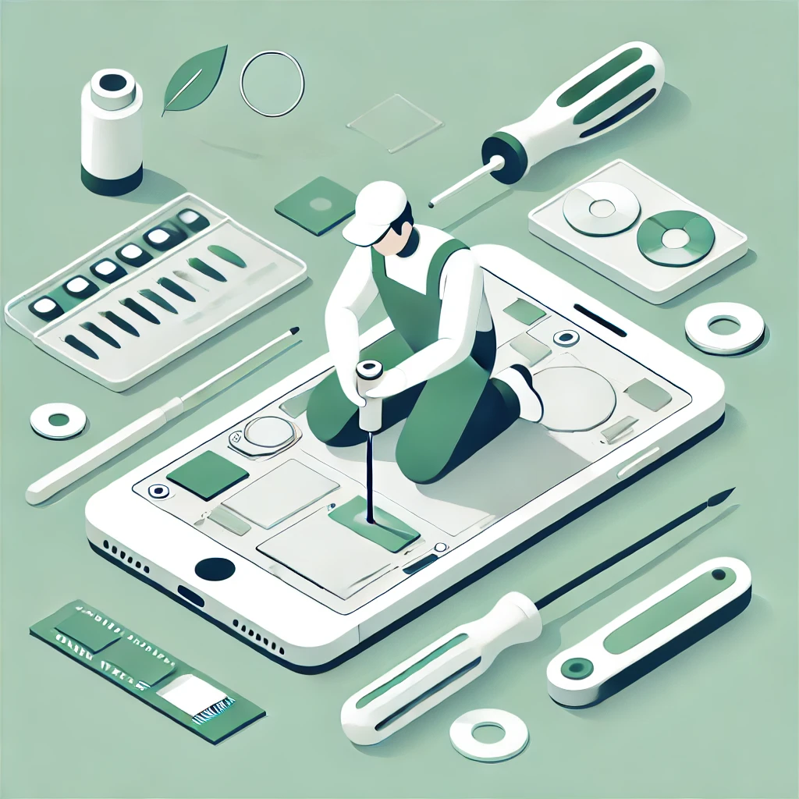

Why Fix Your Device?
Fixing your device instead of throwing it away has many benefits:
- Save Money: Repairing is often cheaper than buying a new device.
- Protect the Environment: Reducing e-waste helps prevent pollution and conserve resources.
- Extend Device Life: Your device can last longer with proper care and repairs.
- Support Sustainability: Repairing promotes a circular economy and reduces waste.
How to Fix Your Device
Here are some steps to get started:
- Identify the Problem: Figure out what’s wrong with your device (e.g., broken screen, battery issues).
- Find a Repair Guide: Use online tutorials or guides to learn how to fix it.
- Gather Tools: Get the necessary tools (e.g., screwdrivers, replacement parts).
- Follow Instructions: Carefully follow the repair guide to fix your device.
- Test Your Device: Once repaired, test it to ensure it works properly.

Need Help? Use Our AI Assistant!
Our AI assistant can guide you through the repair process. Simply describe your issue, and it will provide step-by-step instructions.
E-Waste Repair Assistant
Hi! I’m here to help you fix your device. What’s the issue?